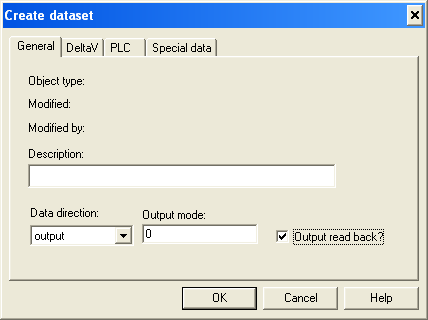

Create datasets for VIM diagnostics
A special case of this dataset is to control redundancy switching at the DeltaV Control Module level. This capability is enabled only if the VIM is configured as redundant. In this case, this dataset should be configured with Data direction as Output, and the Output read back check box should be checked as follows:
